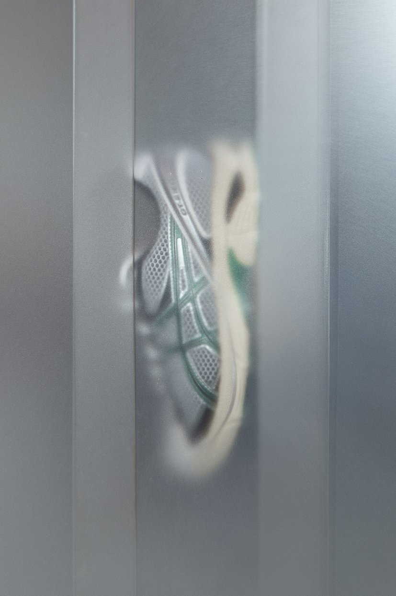
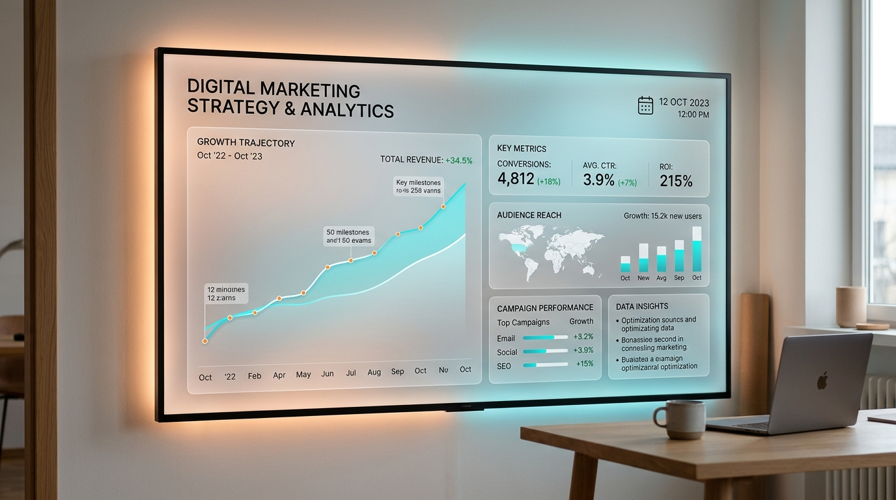

Fotoportfolio
Min portfolio som fotograf – kommersiella kampanjer, produktfotografi och visuella koncept för varumärken som Dr Denim, Asics och Lowcaly.
Besök sebastianthomsen.seJag hjälper företag att skapa relevant innehåll, nå rätt målgrupper och omvandla sin digitala närvaro till resultat. Från idé och produktion till strategi och marknadsföring – jag hjälper dig hela vägen.
Nu breddar jag min kompetens och utbildar mig inom marknadsföring
Med en bakgrund inom medieproduktion väljer jag nu att utbilda mig till Digital Marketing Specialist på IHM Business School. Mitt mål med utbildningen är att utveckla mina kunskaper inom marknadsföring, lär mig om strategier och vad som driver resultat. Som person är jag social, kreativ och taggad på att lära mig nya saker.
Jag skapar visuellt innehåll för varumärken och företag – från produktbilder och kampanjer till film för digitala kanaler.
Innehållsplanering och inlägg anpassade efter din målgrupp, ditt varumärke och dina förutsättningar.
Jag hjälper företag att utveckla sin digitala närvaro genom relevant innehåll, målgruppsanpassad kommunikation och marknadsföring i digitala kanaler.

Min portfolio som fotograf – kommersiella kampanjer, produktfotografi och visuella koncept för varumärken som Dr Denim, Asics och Lowcaly.
Besök sebastianthomsen.seProduktionsbolag där jag har varit med och skapat innehållet. Vi producerar rörligt material, kampanjfilmer och stillbilder för digitala kanaler.
Besök got-cha.se
Utbildar mig till Digital Marketing Specialist på IHM Business School. Utvecklar skarpa strategier inom SEO, SEM, content och analys – framtida case in the making!
Vill du diskutera ett uppdrag, en idé eller ett framtida samarbete? Fyll i formuläret nedan så återkommer jag inom kort.